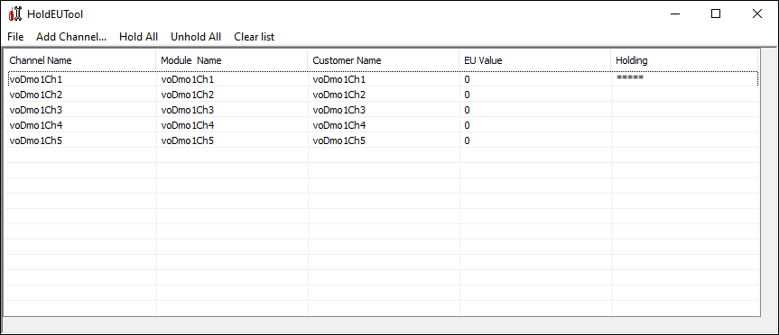
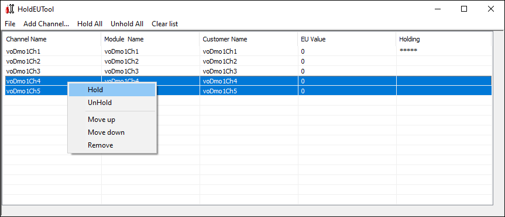
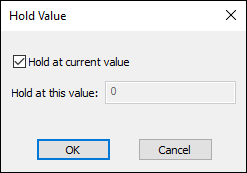
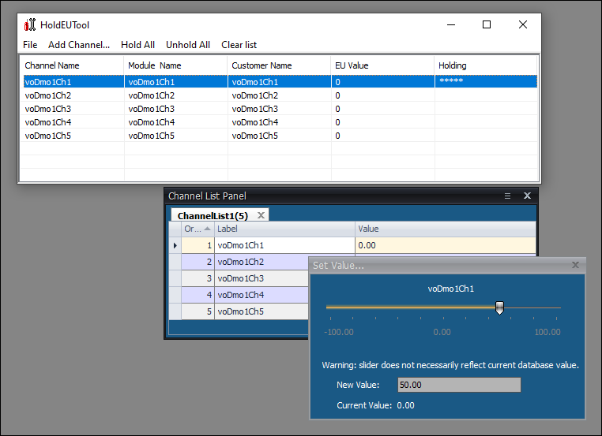

iTest User's Guide
The HoldEUTool.exe utility allows you to "hold" the EU value of a channel. Any attempt to change the channel's value while it is being held will fail. This is primarily used for debugging or calibration but could be beneficial for other purposes.
The HoldEUTool is a simple grid that allows you to add the channels you're interested in. The Holding column indicates if the channel is currently holding a value; this is indicated by several asterisks. When a channel is held, its value cannot be changed. In addition, the following information is displayed for each channel: channel name, module name, customer name, and EU value.
HoldEUTool Interface

The following options are available:
HoldEUTool Options
| Option | Description |
| Menu Options | |
|---|---|
| File > Exit | Closes the HoldEUTool utility. |
| Add Channel... | Launches the Channel Selection dialog, allowing you to select the channel(s) to add to the grid. You can add up to 100 channels at a time. Elements of a Virtual Output Array channel can be selected, e.g., voaDmo1Arr1[1]. |
| Hold All | Launches the Hold Value dialog, allowing you to specify the value to hold for all channels listed in the grid. For more information, refer to the Operation section below. |
| Unhold All | Unholds all listed channels. This allows for each channel's value to be changed. |
| Clear List | Removes all listed channels from the grid. |
| Right-Click Options | |
| Hold | Launches the Hold Value dialog, allowing you to specify the value to hold for the selected channel(s). For more information, refer to the Operation section below. |
| UnHold | Unholds the selected channel(s). This allows for the channel's value to be changed. |
| Move up | Moves the selected channel(s) up in the grid. |
| Move down | Moves the selected channel(s) down in the grid. |
| Remove | Removes the selected channel(s) from the grid. |
After using the Add Channel... option to add channels to the grid, select the channel(s) you want to hold. You can select multiple channels using the Shift + Left-Click or Ctrl + Left-Click options. Once selected, right-click on the channel(s) and select the Hold option.
Hold Option

The Hold Value dialog displays. Check the Hold at current value box to hold the channel value at its current EU value. If this box is unchecked, then you can specify the EU value to hold the channel value at using the Hold at this value field.
Hold Value Dialog

When a channel is being held, its value cannot be changed. For example, in the image below, using the slider or changing the New Value field will not update the held channel value; instead, the channel's value will remain at its current value.
Held Channel Value

The HoldEUTool utility will save the current channel list when exiting and restores this list on the next start. Note that any held channels will be released when the HoldEUTool utility closes and will not be automatically held again the next time it is opened.